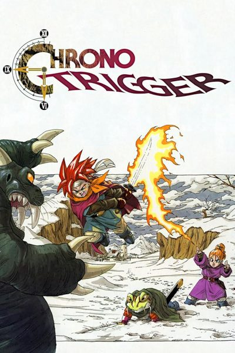
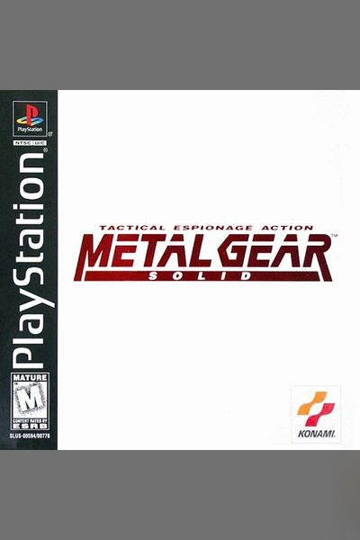

Missão
Ajudar qualquer jogador a passar daquele trecho em que travou, com respostas curtas e diretas.
Ver os guiasQUEM SOMOS
O Jogo Véio é um guia de jogos retrô inspirado nas antigas revistas de dicas e nos detonados que passavam de mão em mão. A ideia é simples: quem travou num clássico encontra aqui a resposta rápida, sem precisar atravessar vídeos de meia hora.
Cada jogo tem prólogo, história, imagens, as dúvidas mais comuns e o Assistente Véio, que responde perguntas sobre chefes, itens, segredos e personagens.
Ajudar qualquer jogador a passar daquele trecho em que travou, com respostas curtas e diretas.
Ver os guias
Ser o lugar de referência para quem quer jogar ou rejogar os clássicos do NES ao PlayStation 2.
Conhecer os consoles
Informação correta, linguagem simples e respeito pela história dos jogos e de quem os criou.
Sugerir um jogoProgramação em JavaScript e lógica do Assistente Véio
CSS, Bootstrap, imagens e áudios
Cada um teve um foco, mas os dois participaram de um pouco de tudo no projeto.
O Jogo Véio é um projeto acadêmico, sem fins lucrativos, feito para a disciplina de Desenvolvimento Front-End para Web da Universidade Positivo. Os jogos, nomes, imagens e marcas citados pertencem às suas respectivas empresas.